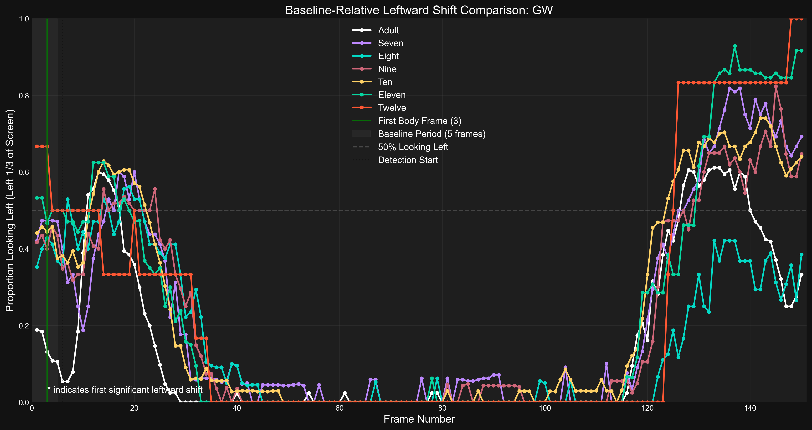
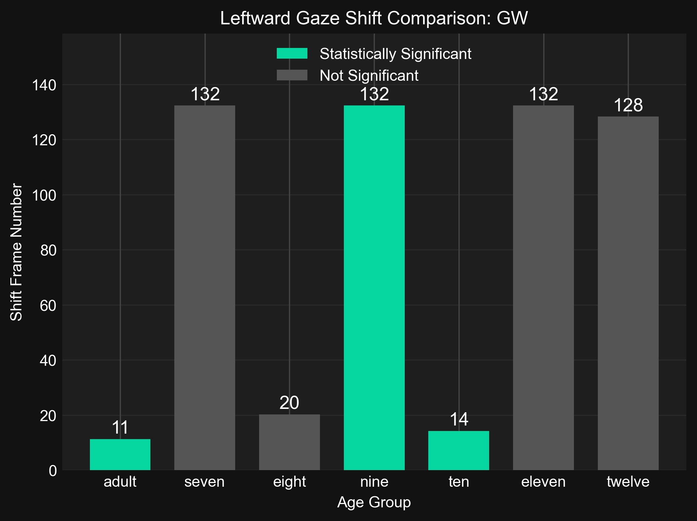
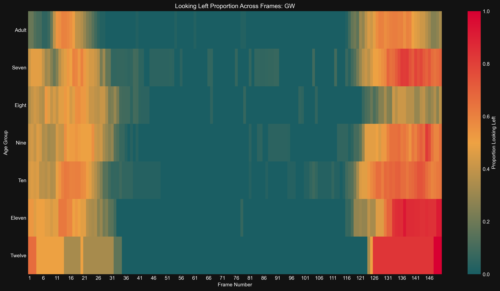
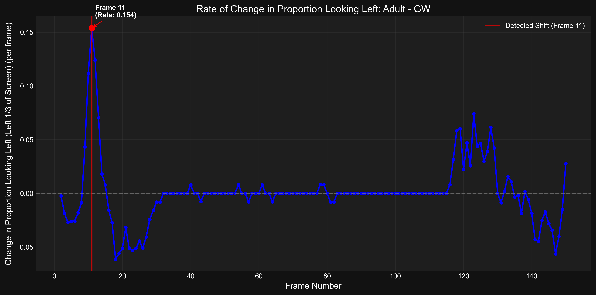
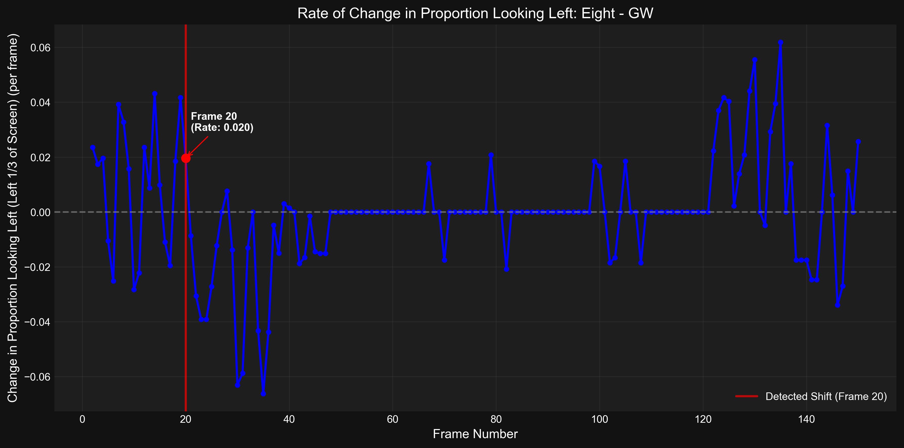
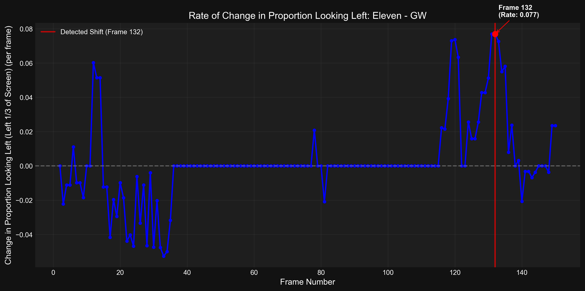
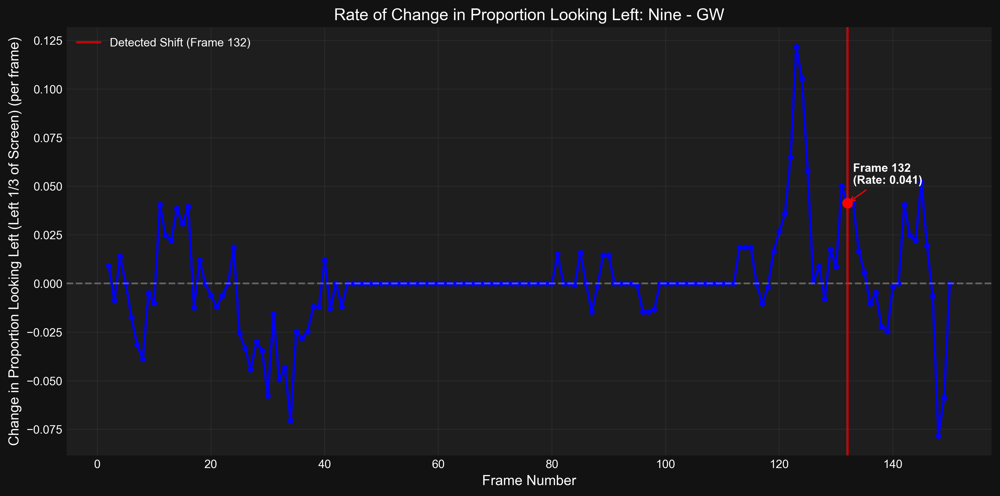
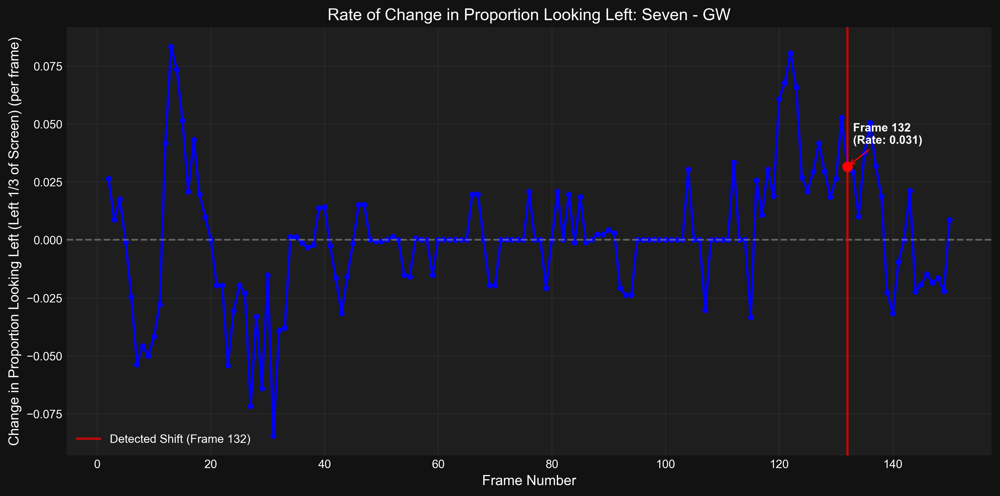
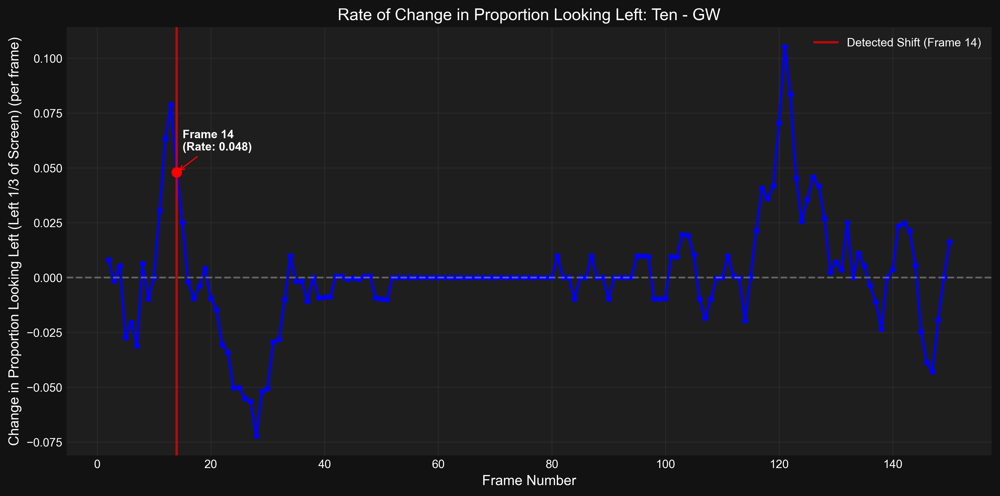
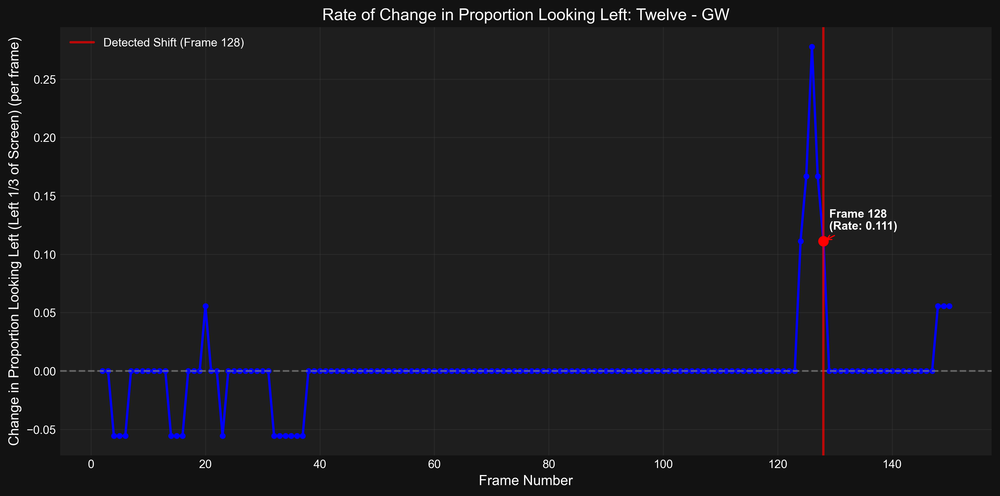

Visualization Index
Generated: 2025-04-16 16:44:16
Visualizations
Baseline Age Timeseries
adult
![Time series of the proportion of participants looking left over time for age group 'adult'. The blue line shows the proportion at each frame with 95% CI (gray area). The dotted red horizontal line indicates the calculated statistical threshold (0.29) for detecting a significant shift (baseline mean + 2.00*SD). The dashed purple line shows the baseline mean (0.14) during the baseline period (frames 0-5). The solid red vertical line marks the first significant shift frame (11). The green solid line indicates the First Body Frame at frame 3.](01_baseline_age_timeseries_01_adult_20250416_164409.png)
Time series of the proportion of participants looking left over time for age group 'adult'. The blue line shows the proportion at each frame with 95% CI (gray area). The dotted red horizontal line indicates the calculated statistical threshold (0.29) for detecting a significant shift (baseline mean + 2.00*SD). The dashed purple line shows the baseline mean (0.14) during the baseline period (frames 0-5). The solid red vertical line marks the first significant shift frame (11). The green solid line indicates the First Body Frame at frame 3.
File: 01_baseline_age_timeseries_01_adult_20250416_164409.png | Generated: 2025-04-16T16:44:14.979604eight
![Time series of the proportion of participants looking left over time for age group 'eight'. The blue line shows the proportion at each frame with 95% CI (gray area). The dotted red horizontal line indicates the calculated statistical threshold (0.54) for detecting a significant shift (baseline mean + 2.00*SD). The dashed purple line shows the baseline mean (0.39) during the baseline period (frames 0-5). The solid red vertical line marks the first significant shift frame (20). The green solid line indicates the First Body Frame at frame 3.](01_baseline_age_timeseries_03_eight_20250416_164409.png)
Time series of the proportion of participants looking left over time for age group 'eight'. The blue line shows the proportion at each frame with 95% CI (gray area). The dotted red horizontal line indicates the calculated statistical threshold (0.54) for detecting a significant shift (baseline mean + 2.00*SD). The dashed purple line shows the baseline mean (0.39) during the baseline period (frames 0-5). The solid red vertical line marks the first significant shift frame (20). The green solid line indicates the First Body Frame at frame 3.
File: 01_baseline_age_timeseries_03_eight_20250416_164409.png | Generated: 2025-04-16T16:44:10.701043eleven
![Time series of the proportion of participants looking left over time for age group 'eleven'. The blue line shows the proportion at each frame with 95% CI (gray area). The dotted red horizontal line indicates the calculated statistical threshold (0.66) for detecting a significant shift (baseline mean + 2.00*SD). The dashed purple line shows the baseline mean (0.51) during the baseline period (frames 0-5). The solid red vertical line marks the first significant shift frame (132). The green solid line indicates the First Body Frame at frame 3.](01_baseline_age_timeseries_06_eleven_20250416_164409.png)
Time series of the proportion of participants looking left over time for age group 'eleven'. The blue line shows the proportion at each frame with 95% CI (gray area). The dotted red horizontal line indicates the calculated statistical threshold (0.66) for detecting a significant shift (baseline mean + 2.00*SD). The dashed purple line shows the baseline mean (0.51) during the baseline period (frames 0-5). The solid red vertical line marks the first significant shift frame (132). The green solid line indicates the First Body Frame at frame 3.
File: 01_baseline_age_timeseries_06_eleven_20250416_164409.png | Generated: 2025-04-16T16:44:13.330891nine
![Time series of the proportion of participants looking left over time for age group 'nine'. The blue line shows the proportion at each frame with 95% CI (gray area). The dotted red horizontal line indicates the calculated statistical threshold (0.58) for detecting a significant shift (baseline mean + 2.00*SD). The dashed purple line shows the baseline mean (0.43) during the baseline period (frames 0-5). The solid red vertical line marks the first significant shift frame (132). The green solid line indicates the First Body Frame at frame 3.](01_baseline_age_timeseries_04_nine_20250416_164409.png)
Time series of the proportion of participants looking left over time for age group 'nine'. The blue line shows the proportion at each frame with 95% CI (gray area). The dotted red horizontal line indicates the calculated statistical threshold (0.58) for detecting a significant shift (baseline mean + 2.00*SD). The dashed purple line shows the baseline mean (0.43) during the baseline period (frames 0-5). The solid red vertical line marks the first significant shift frame (132). The green solid line indicates the First Body Frame at frame 3.
File: 01_baseline_age_timeseries_04_nine_20250416_164409.png | Generated: 2025-04-16T16:44:11.604146seven
![Time series of the proportion of participants looking left over time for age group 'seven'. The blue line shows the proportion at each frame with 95% CI (gray area). The dotted red horizontal line indicates the calculated statistical threshold (0.61) for detecting a significant shift (baseline mean + 2.00*SD). The dashed purple line shows the baseline mean (0.46) during the baseline period (frames 0-5). The solid red vertical line marks the first significant shift frame (132). The green solid line indicates the First Body Frame at frame 3.](01_baseline_age_timeseries_02_seven_20250416_164409.png)
Time series of the proportion of participants looking left over time for age group 'seven'. The blue line shows the proportion at each frame with 95% CI (gray area). The dotted red horizontal line indicates the calculated statistical threshold (0.61) for detecting a significant shift (baseline mean + 2.00*SD). The dashed purple line shows the baseline mean (0.46) during the baseline period (frames 0-5). The solid red vertical line marks the first significant shift frame (132). The green solid line indicates the First Body Frame at frame 3.
File: 01_baseline_age_timeseries_02_seven_20250416_164409.png | Generated: 2025-04-16T16:44:09.817244ten
![Time series of the proportion of participants looking left over time for age group 'ten'. The blue line shows the proportion at each frame with 95% CI (gray area). The dotted red horizontal line indicates the calculated statistical threshold (0.58) for detecting a significant shift (baseline mean + 2.00*SD). The dashed purple line shows the baseline mean (0.43) during the baseline period (frames 0-5). The solid red vertical line marks the first significant shift frame (14). The green solid line indicates the First Body Frame at frame 3.](01_baseline_age_timeseries_05_ten_20250416_164409.png)
Time series of the proportion of participants looking left over time for age group 'ten'. The blue line shows the proportion at each frame with 95% CI (gray area). The dotted red horizontal line indicates the calculated statistical threshold (0.58) for detecting a significant shift (baseline mean + 2.00*SD). The dashed purple line shows the baseline mean (0.43) during the baseline period (frames 0-5). The solid red vertical line marks the first significant shift frame (14). The green solid line indicates the First Body Frame at frame 3.
File: 01_baseline_age_timeseries_05_ten_20250416_164409.png | Generated: 2025-04-16T16:44:12.505964twelve
![Time series of the proportion of participants looking left over time for age group 'twelve'. The blue line shows the proportion at each frame with 95% CI (gray area). The dotted red horizontal line indicates the calculated statistical threshold (0.78) for detecting a significant shift (baseline mean + 2.00*SD). The dashed purple line shows the baseline mean (0.60) during the baseline period (frames 0-5). The solid red vertical line marks the first significant shift frame (128). The green solid line indicates the First Body Frame at frame 3.](01_baseline_age_timeseries_07_twelve_20250416_164409.png)
Time series of the proportion of participants looking left over time for age group 'twelve'. The blue line shows the proportion at each frame with 95% CI (gray area). The dotted red horizontal line indicates the calculated statistical threshold (0.78) for detecting a significant shift (baseline mean + 2.00*SD). The dashed purple line shows the baseline mean (0.60) during the baseline period (frames 0-5). The solid red vertical line marks the first significant shift frame (128). The green solid line indicates the First Body Frame at frame 3.
File: 01_baseline_age_timeseries_07_twelve_20250416_164409.png | Generated: 2025-04-16T16:44:14.063575Baseline Detailed Timeseries
Ages
Detailed time series comparison of the proportion looking left across all age groups. Each colored line represents an age group. Shaded areas indicate the 95% confidence intervals. No statistically significant shifts were detected for any group displayed. The gray shaded area represents the baseline period (frames 0-5). The dashed gray line indicates 50% looking proportion. The green vertical line marks the First Body Frame (3).
File: 02_baseline_detailed_timeseries_all_ages_20250416_164409.png | Generated: 2025-04-16T16:44:16.721166Age Group Comparison
Ages
Comparison of shift frames across age groups for event type gw.
File: 03_age_group_comparison_all_ages_20250416_164409.png | Generated: 2025-04-16T16:44:15.483667Looking Proportion Heatmap
Ages
Heatmap showing proportion looking left across all age groups and frames for event type gw.
File: 04_looking_proportion_heatmap_all_ages_20250416_164409.png | Generated: 2025-04-16T16:44:16.210250Proportion Change Timeseries
adult
Time series showing the rate of change (derivative) of the looking-left proportion for age group 'adult'. The blue line indicates the frame-by-frame change in proportion. Peaks indicate rapid increases in looking left.
File: 05_proportion_change_timeseries_01_adult_20250416_164409.png | Generated: 2025-04-16T16:44:15.306940eight
Time series showing the rate of change (derivative) of the looking-left proportion for age group 'eight'. The blue line indicates the frame-by-frame change in proportion. Peaks indicate rapid increases in looking left.
File: 05_proportion_change_timeseries_03_eight_20250416_164409.png | Generated: 2025-04-16T16:44:11.005698eleven
Time series showing the rate of change (derivative) of the looking-left proportion for age group 'eleven'. The blue line indicates the frame-by-frame change in proportion. Peaks indicate rapid increases in looking left.
File: 05_proportion_change_timeseries_06_eleven_20250416_164409.png | Generated: 2025-04-16T16:44:13.664485nine
Time series showing the rate of change (derivative) of the looking-left proportion for age group 'nine'. The blue line indicates the frame-by-frame change in proportion. Peaks indicate rapid increases in looking left.
File: 05_proportion_change_timeseries_04_nine_20250416_164409.png | Generated: 2025-04-16T16:44:11.919450seven
Time series showing the rate of change (derivative) of the looking-left proportion for age group 'seven'. The blue line indicates the frame-by-frame change in proportion. Peaks indicate rapid increases in looking left.
File: 05_proportion_change_timeseries_02_seven_20250416_164409.png | Generated: 2025-04-16T16:44:10.147625ten
Time series showing the rate of change (derivative) of the looking-left proportion for age group 'ten'. The blue line indicates the frame-by-frame change in proportion. Peaks indicate rapid increases in looking left.
File: 05_proportion_change_timeseries_05_ten_20250416_164409.png | Generated: 2025-04-16T16:44:12.836036twelve
Time series showing the rate of change (derivative) of the looking-left proportion for age group 'twelve'. The blue line indicates the frame-by-frame change in proportion. Peaks indicate rapid increases in looking left.
File: 05_proportion_change_timeseries_07_twelve_20250416_164409.png | Generated: 2025-04-16T16:44:14.400257